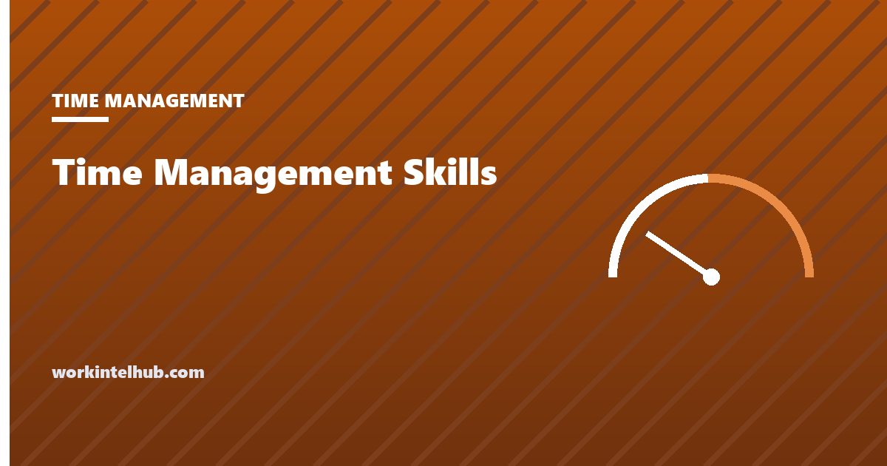

Time Management Skills

Time management is not one skill. It is a handful of them, and people are usually strong in some and weak in others: the planner who cannot say no, the focused worker who never reviews, the delegator whose own list is a mess. Generic advice fails because it targets the average, and nobody is the average. The useful question is which of the skills is your weakest, because that is the one where a small change pays.
The assessment below scores seven skills from fourteen statements and points to the two to work on. The rest of the page describes each skill, what it looks like when it is missing, the evidence on what improves it, and why "time management" is a slightly misleading name for what is really attention and decision management.
Self-assessment
Rate each statement: 1 = rarely, 3 = sometimes, 5 = almost always. Fourteen statements, two per skill.
Nothing typed here leaves your browser. Scores are per skill out of 10; the lowest two are where a change would pay most. This is a self-assessment, not a test, and the honest answer is the useful one.
The seven skills
| Skill | What it is | What its absence looks like | Where to start |
|---|---|---|---|
| Planning | Deciding in advance what the week and the day are for | The week is spent on whatever arrived; important work is done "when there is time" | Weekly planner, nightly six |
| Prioritising | Knowing which task matters most and acting on it first | Everything is urgent; the easy tasks get done and the hard ones slip | Eisenhower matrix, eat the frog |
| Estimating | Knowing how long things take and where time actually goes | Chronic overcommitment; surprise at the end of every week | One-week time audit |
| Focus | Working on one thing for long enough to make progress | Constant switching; a full day that produced nothing finished | Time blocking, Pomodoro |
| Boundaries | Declining, negotiating and protecting time | A calendar owned by other people; resentment; overtime as the norm | Focus blocks |
| Delegation and systems | Removing recurring work from your own hands | The same manual task every week; meetings without agendas | Agenda builder |
| Review | Looking back and changing something | The same week, repeated, with the same complaints | Friday ten minutes in the weekly planner |
The skills are not equal. Planning and prioritising are upstream: a person who does both badly cannot fix focus, because there is nothing decided to focus on. Review is the one that makes the others improve, and it is the one almost everyone skips.
What the research says improves them
Three findings do most of the work. The first is that plans with a time and place get done and intentions without them mostly do not: Gollwitzer and Sheeran (2006) pooled 94 studies and found that implementation intentions, "on Tuesday at 9 I will draft section two", raised goal attainment with an effect size of 0.65, which is large for a behavioural intervention. Planning, in the sense that matters, is writing down when.
The second is that switching is expensive. The American Psychological Association summarises task-switching research by Rubinstein, Meyer and Evans showing measurable time costs on every switch, larger for complex or unfamiliar tasks, with Meyer's estimate that switching can consume up to 40 per cent of productive time. The Microsoft Work Trend Index found workers interrupted every two minutes on average across 2025. Focus is therefore mostly a matter of environment: removing the inputs rather than resisting them.
The third is that people estimate badly and consistently, which is why the estimating row exists. The planning fallacy, first described by Kahneman and Tversky in 1979, is the tendency to underestimate the time a task will take even when one has done the same task before. The only reliable corrective is data: measured actuals from past work, which a week's time audit supplies and memory does not.
Building the weakest skill
- Pick one. The assessment names two; take the lower. Working on all seven is a new year's resolution.
- Choose the smallest practice that exercises it. For planning, a six-item list each evening. For focus, one 45-minute block each morning with the phone in another room. For boundaries, declining one meeting a week that has no agenda. For review, ten minutes on Friday.
- Attach it to something that already happens. The list is written when the laptop closes; the review is done before Friday's last meeting. A practice with a cue survives; one that depends on remembering does not.
- Run it for a month before judging. Most of these feel awkward for two weeks and natural by four.
- Re-take the assessment. The score should move on that skill and often on a neighbouring one, because planning improves focus and review improves planning.
For people who manage others, the same skills apply one level up: the team's planning is the quarterly OKRs, its boundaries are the charter's working agreements, and its review is the retrospective. A manager who cannot manage their own week rarely manages the team's.
What time management is not
- It is not doing more. The people with the best scores on this assessment typically do fewer things, chosen earlier. Volume is the symptom of weak prioritising, not the reward for strong time management.
- It is not a personality trait. Conscientiousness helps, but the skills are learnable and the evidence on implementation intentions is that structure substitutes for temperament.
- It is not an app. The tools page sorts them by the problem they solve, and the honest summary is that a pencil, a calendar and a Friday habit outperform most of them.
- It is not time. Time cannot be managed; it passes at the same rate regardless. What gets managed is attention (focus), decisions (planning and prioritising) and commitments (boundaries). The name has stuck, but the reframing matters, because it points at the things that can actually change.
Key takeaways
- Time management is seven skills: planning, prioritising, estimating, focus, boundaries, delegation and systems, and review. Most people are strong in some and weak in others.
- Fix the weakest one with the smallest practice that exercises it, attached to a cue that already happens, for a month.
- Plans with a time and place get done; intentions without them mostly do not (effect size 0.65 across 94 studies).
- Switching costs up to 40 per cent of productive time and interruptions arrive every two minutes; focus is an environment problem.
- People underestimate task duration even for familiar work; a week of measured actuals is the only corrective.
- What gets managed is attention, decisions and commitments, not time.
Frequently asked questions
What are the most important time management skills?
Planning (deciding what the week and day are for), prioritising (knowing which task matters most), estimating (knowing how long things take), focus (working on one thing long enough to progress), boundaries (declining and protecting time), delegation and systems (removing recurring work from your own hands) and review (looking back and changing something). Planning and prioritising are upstream of the rest.
How do I know which time management skill I am weakest at?
Rate yourself honestly on concrete behaviours rather than intentions. The fourteen-statement assessment on this page scores seven skills out of ten each and names the two lowest. The behaviours that matter are things like writing tomorrow's list the evening before, working 45 minutes without switching, and reviewing the week on Friday.
How can I improve my time management skills quickly?
Pick the single weakest skill and adopt the smallest daily practice that exercises it: a six-item list each evening for planning, one protected 45-minute block each morning for focus, one declined meeting a week for boundaries, ten minutes on Friday for review. Attach it to an existing cue and run it for a month.
Why do time management techniques not work for me?
Usually because the technique targets a skill you already have while the weak one goes untouched, or because it was adopted as a system rather than a habit with a cue. A focus technique cannot help someone whose problem is that nothing has been prioritised; a planner cannot help someone who never reviews it.
Is multitasking a time management skill?
No. Task-switching research summarised by the American Psychological Association shows every switch costs time, more for complex tasks, with estimates of up to 40 per cent of productive time lost. Single-tasking in blocks is the skill; multitasking is the absence of it.
What is the difference between time management and productivity?
Productivity is the output; time management is one set of inputs to it. A person can manage time well and produce little if the work chosen was wrong, which is why prioritising sits at the centre of the skills. Measuring output rather than hours is the subject of the site's productivity guides.